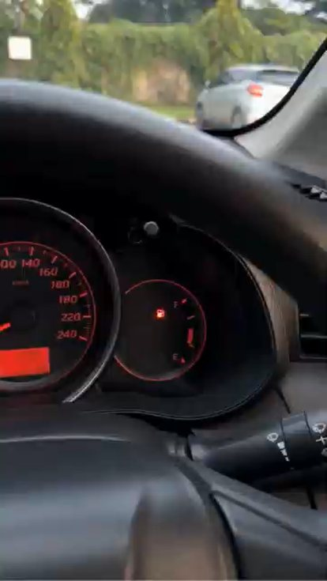
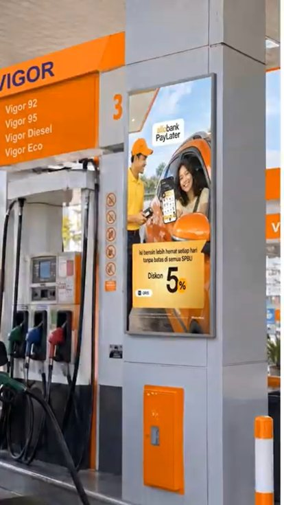
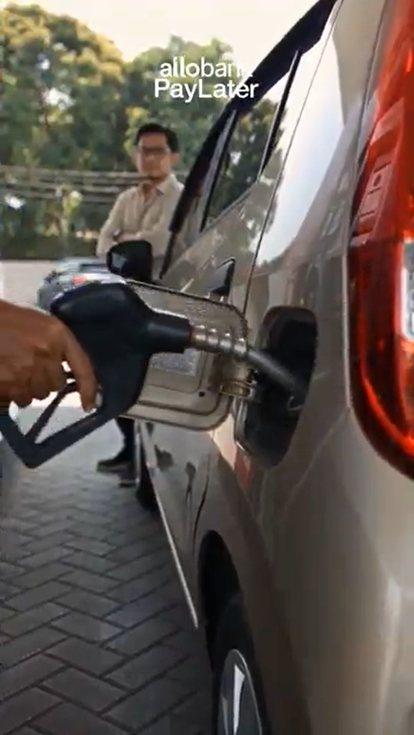

Allo Bank PayLater × SPBU
- Method
- Production
- Concept
- “Sometimes, it’s not the destination that costs you. It’s everything you need to get there.”
- Plot
- Refuel → any gas station → a little extra saving
- Insight
- Bensin mahal (fuel is expensive); diskon (discounts)
Assets used


Prompts

Scene 1, 4–5s. Create a realistic UGC-style vertical 9:16 video filmed on a smartphone. A young Indonesian adult is sitting inside a parked car and notices that the fuel gauge is getting low. Show a brief close-up of the dashboard fuel indicator, followed by the driver’s natural reaction of realizing it’s time to refuel. Natural daylight, subtle handheld camera movement, authentic everyday Indonesian setting, slightly imperfect framing. Keep the scene casual and relatable, like a spontaneous travel vlog. No dialogue, no subtitles, no text overlays, no visible payment apps.
Scene 2, 4–5s. A realistic handheld smartphone video at an Indonesian gas station. A compact car pulls up beside a fuel pump, and a uniformed attendant begins refueling the vehicle. Capture a natural close-up of the fuel nozzle being inserted into the car, with the pump and gas station environment visible in the background. The driver remains near the car, waiting casually. Natural lighting, authentic ambient atmosphere, minimal camera movement, raw UGC aesthetic, vertical 9:16. No dialogue, no subtitles, no text overlays, no payment close-ups, and no fabricated promotional signage.
Scene 3, 4–5s. A candid UGC-style vertical smartphone video at the same Indonesian gas station. The driver stands safely beside the parked car after refueling and casually checks their smartphone. Capture a natural over-the-shoulder angle, then a brief shot of the driver’s pleased reaction. Keep the phone screen generic and unreadable, with no invented app interface, QR code, or payment confirmation. Realistic ambient lighting, subtle handheld movement, everyday casual outfit, authentic atmosphere, 9:16 vertical format. No dialogue, no subtitles, no text overlays.- Scene 4, 4–5s. A realistic UGC-style vertical 9:16 video of the same driver getting back into the car after refueling. Show a brief candid moment of the driver smiling with relief, putting the seat belt on, and preparing to continue the journey. The car remains stationary during the shot. Natural daylight, subtle handheld smartphone camera movement, realistic expressions, casual everyday mood, imperfect framing. No dialogue, no subtitles, no text overlays, no visible phone screen, and no exaggerated commercial acting.